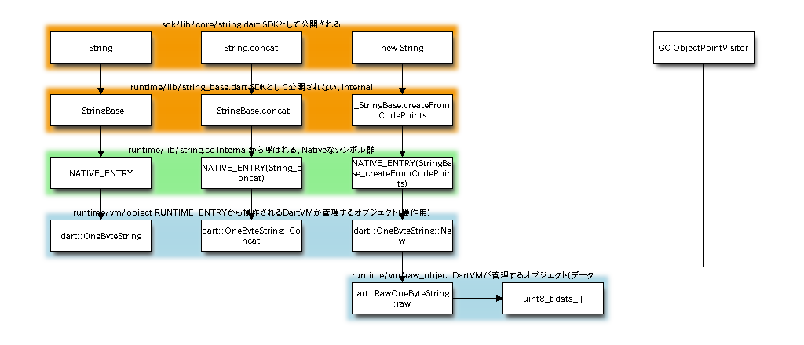
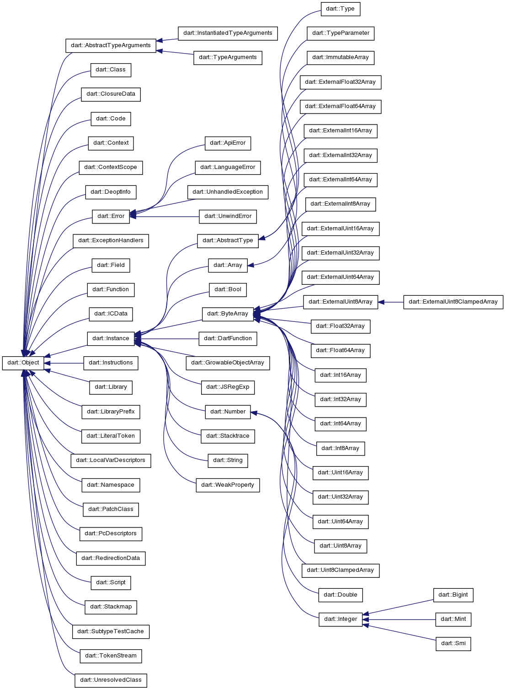
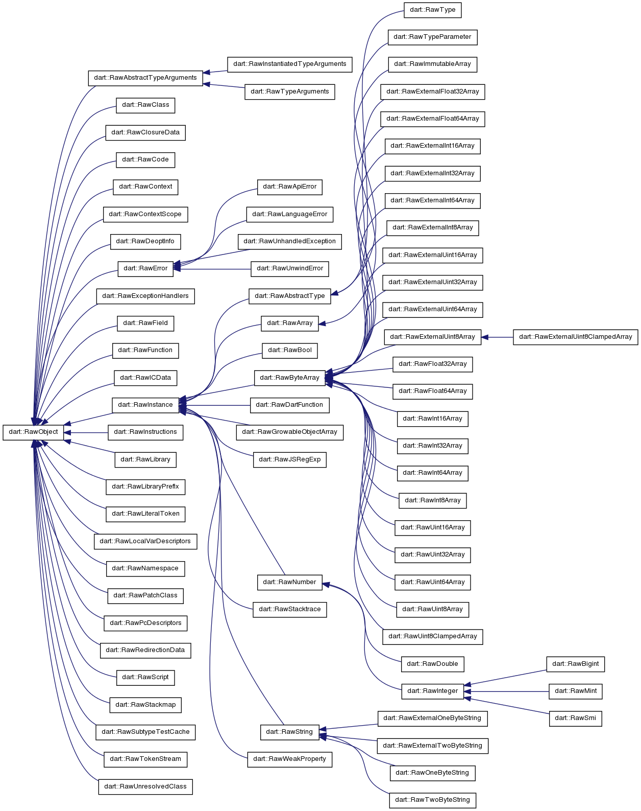

Dart VM Advent Calendar 2012 12/18¶
DartのCore API¶
Dart SDKのCore APIは、dartだけで記述されていることが少なく、途中からnative extensionを使ってC++実装を呼び出していたり、
Core APIのクラスと対となる、Dart VM内のC++クラスと紐づいていることが多いです。
先々日に紹介したscalarlistパッケージのFloat64Listも、Dart VM内にFloat64Arrayクラスが定義されていました。
今回はStringについて紹介しながら、DartのAPIとDart VM間の階層関係をざっくりとみていきます。
Dartの階層構造¶
dartのcore APIであるStringを例に、どのように階層を重ねているのか。
登場するメソッドは、String.concatと、new String()です。

DartのAPIの階層は、上記のように階層に分かれます。 ※ ほんとはもっと細かく分かれるかも。。
dartのライブラリ¶
Dart SDKのライブラリには、主にsdk/libの下で定義されている、純粋にdartで記述されたライブラリと、 sdk/libから呼ばれる、dartのinternalクラスに分けられます。
dartのinternalクラスは、高速化のためにC++で記述されたメソッド(native extension)を呼び出します。
nativeシンボル¶
Dart VMのnative extensionを使用して、Dart VM内部のstatic関数を、DartのCore APIに対して公開しています。
native extensionは、JITコンパイルしたコードを紹介した際に登場したStubsや、CallToRuntimeとは違います。
runtime/libの下で定義されるC++のコードは、DEFINE_NATIVE_ENTRYマクロで定義され、あくまでnative extension機能を使用し、Core APIから呼び出されます。
CallToRuntimeから呼ばれるシンボルは、runtime/vmの下で定義され、DEFINE_RUNTIME_ENTRYマクロで定義されます。
Dart VMのオブジェクト¶
 Dartのクラスと対応するDart VM内のクラスは、多くの場合 ObectクラスとRawObjectクラスを継承しています。
Objectクラスの継承図と、RawObjectクラスの継承図はそっくりです。
Objectクラスは、主にRawObjectに対する操作のみを定義しています。
RawObjectクラスは、実データを内包し、管理するクラスです。
Objectクラスは、実データを定義するRawObjectクラスへの参照を持ち、必ずペアで定義されています。
そのため、Objectクラスを継承するクラスは、raw_フィールドのみ持ちます。
また、GCのObjectPointerVisitorは、RawObjectを継承したクラスのみを対象とします。
GCとの関連¶
GCのVisitorはObjectPointerを辿りながら、GC対象を探します。
その際GCのVisitorは、RawObjectを継承したクラスのみ辿ります。
RawObjectは、最初の1wordがObjctTagが埋まっており、2word以降から実データが定義されています。
上記のRawOneByteStringの場合、実データはuint8_t[]になりますが、実データは辿りません。RawOneByteStringのインスタンスが、ObjectPointerの末端になります。
また、RawOneByteStringであるため、uint8_[]のsizeを格納したlengthフィールドが定義されているはずですが、GCのVisitorに辿らせないような配慮がされています。
RawArrayだった場合には、Arrayとして内包したObjectPointerが多数あるため、GCのVisitorは内包したObjectPointerを辿ります。
まとめ¶
- Coreのクラスと対となるクラスがDart VM内に定義されている。
- Dart VM内には、ObjectとRawObjectが存在する。
- GCのVisitorが辿るのはRawObject